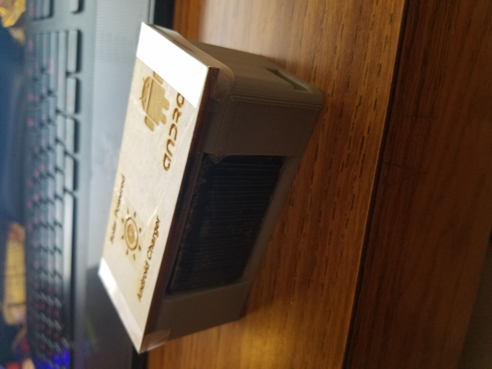
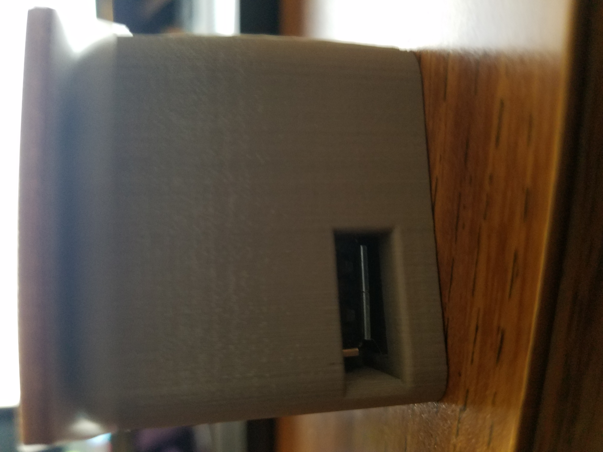

1. Describe your project.
My project is a solar powered android charger. It is very small and portable. You just put your usb into the port. I used: soldering, auto cad design, laser cutting and 3D printing for this project.
2. What equipment and materials did you use to create the project.
I used a 4v small solar panel, a USB charging circuit, 1N914 diode, AA chargeable batteries, AA battery holders, wires, solders and used a 3D printer to print the case out.
3. How much time did you spend working on the project?
I spent around 2-3 days working on the project in order to get it working, make and fit the case properly, and to solder everything nicely.
4. What settings and configurations did you use on each machine.
Nothing much. Just the normal settings for the 3D printer and just turned on the solder.
5. What did you learn from this project?
I learned to solder, how circuits work and designing your own things.
6. Please document each step of your project including photographs and include ALL project files.

This is the internals of my solar panel charger that I could not finish in time because the diode I needed did not come in on time.

This is the front of what the "finished" product would look like. I designed the case to fit the battery holders.

This is the side where you can plug in your usb. I made the hole on the side.
File Download
Charger Case File (.stl)
Case Cover Hinge File (.stl)
Charger Case Cover File (.cdr)